Operating Documentation
Direction 5440001-3, Rev# 6
Signa HDxt Service Methods
Module Version 3.0, Version Date 6/10/09
Operating Documentation |
| ||||
| strong Magnetic field | ||||
| FERROUS MATERIALS CAN BECOME DANGEROUS PROJECTILES IN THE PRESENCE OF THE MAGNETIC FIELD PRODUCED BY THE MAGNET. Do not Bring any ferromagnetic tools or equipment into the magnet room. | ||||
The following describes the theory for Patient Transport. Illustrations 1 through 4 identify the main parts of the table.
Illustration 1: Patient Transport Overview

Illustration 2: Removing Covers
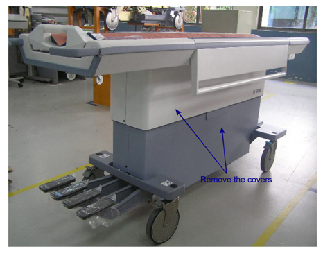
Illustration 3: Covers Removed - Front Table View

Illustration 4: Covers Removed - Back Table View

The patient transport is a lightweight, portable, patient table that can be rigidly attached to the magnet enclosure using a dock assembly, which is described in the magnet enclosure theory. The dock assembly (Illustration 5) provides a secure clamping station to which the transport hook may be affixed during patient transfer. The transport is held in place by a single 500-lb. force provided by an over-the-center cam mounted on the transport. The table can be raised and lowered whether it is attached to the magnet enclosure or at a remote location. During operation, three-lock casters prevent the movement of the unit during patient transfer. One caster has a directional lock (Illustration 6) for straight-line tracking.
Illustration 5: Dock Assembly
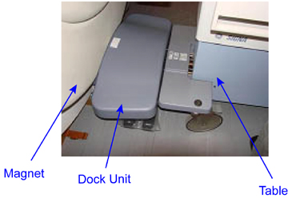
| NOTE: | The Direction Lock Caster facilitates easy maneuvering and does NOT lock the table from moving. |
| ||||
| Patient stability | ||||
| Table not locked | ||||
| To prevent the table from moving, ensure the three-locking casters and the Direction Lock Caster are locked. |
Illustration 6: Locking vs. Direction Locking
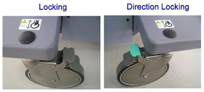
A single-acting hydraulic pump, located at the docking end of the table, provides hydraulic pressure to raise the table. The hydraulic pump receives its power either from an electric motor located in the dock, or from a foot pedal located at the rear of table. The table is lowered by gravity when the down valve, located at the base of the hydraulic cylinder on the table, is opened. This valve is mechanically linked to a foot pedal on the table, and when the table is docked, to a set of pedals located on either side of the dock assembly. (See Illustration 7.)
Illustration 7: Hydraulics

Four foot pedals (Illustration 8) are located at the rear of the table. Refer to Table 1 for functions.
Illustration 8: Foot Pedals
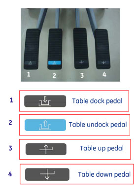
Table 1: Pedal Description
| Table Dock | Activates the docking mechanism to lock the table to the magnet enclosure. |
| Table Undock | Detaches the table from the magnet enclosure. |
| Table Up | Operates the hydraulic pump that raises the table, using a mechanical linkage connected to the foot pedal. |
| Table Down | Lowers the table by opening the down valve. |
The cradle interlock prevents the table from being undocked or lowered unless the cradle is in the proper position on the tabletop. Illustration 9 and Illustration 11 show the position of the undock link when the cradle is and is not in the proper position. In Illustration 10, the Undock Link and Down Link are raised, preventing the Undock and down of the table. In Illustration 12, the Undock Link and down are lowered, enabling table undock and down functions.
Illustration 9: Position of Undock Link - Cradle Not in Proper Position
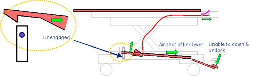
Illustration 10: Cradle Interlock - Undock Link and Down Link Raised
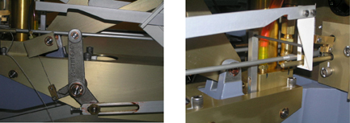
Illustration 11: Position of Undock Link - Cradle in Proper Position

Illustration 12: Cradle Interlock - Undock Link and Down Link Lowered
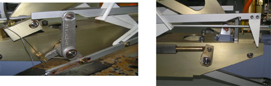
Inadvertent movement of the table is also protected by three mechanical latches built into the transport shown in Illustration 13.
Illustration 13: Mechanical Latches

The cradle cannot move out of the tabletop unless the patient transport (table) is docked. This is ensured by the front latch (dock link), which locks the cradle as shown in Illustration 14.
Illustration 14: Docked Table
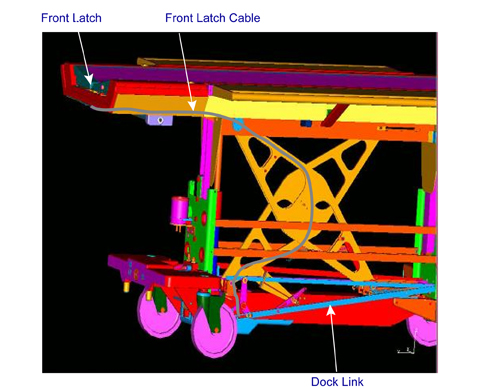
Illustration 15 shows the table in an undocked position and Illustration 16shows the table in a docked position.
Illustration 15: Undocked Table

The cradle can move forward only by approximately 3.62 in. (92 mm) if the table is not docked, and the front latch has not locked the cradle.
Illustration 16: Docked Table

| NOTE: | The central pin (shown in Illustration 17) engages with the cradle when the table is undocked, and it is retracted when the table is docked. (See Illustration 16 and Illustration 17.) |
Illustration 17: Location of Central Pin

The cradle cannot move forward unless the carriage is latched onto the cradle. The cradle latch positions are shown in Illustration 18.
Illustration 18: Carriage Latch Positions

The Table has arm boards on each side that can be locked into three positions. (See Illustration 19.) They can be raised to:
provide patient restraint, and
support the arms of the Supine patient for purposes of administering an injection while the patient is lying on the table.
When not in use, the arm boards can be lowered and locked in the rest position.
Illustration 19: Arm Board Positions
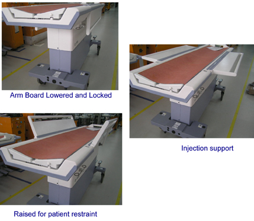
The table has a mechanism to operate the switch in the dock unit when the table is fully up. The carriage assembly moves forward and latches onto the cradle when the switch is activated. (SeeTable 2 for up sensor conditions, Illustration 20 for up sensor loose, and Illustration 21.)
Table 2: Up Sensor Conditions
| Up Limit Cable Position (Illustration 22) | Table Position | Switch State |
| Loose | Table is not in fully up position | Deactivated |
| Taut | Table is in the fully up position | Link pushed forward and dock unit switch is actuated |
Illustration 20: Up Sensor Loose
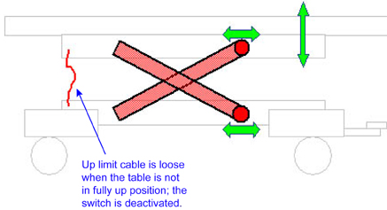
Illustration 21: Up Sensor Taut
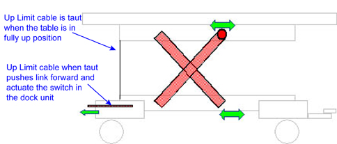
Illustration 22: Up Limit Cable
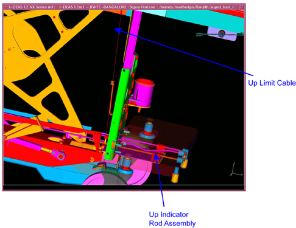
In case of emergencies when the patient has to be removed out of the magnet bore before /during the scan, the following procedure has to be followed.
Calmly move to the magnet bore, reach the emergency egress handle, shown in Illustration 23, and rotate it (unlocks the cradle from the dog housing of the magnet bore), then pull the cradle onto the patient transport.
Undock the patient transport, and exit the magnet room.
Illustration 23: Location of Egress Handle to Remove Patient

The Table Transport Emergency Release is used in the event the undock pedal on the patient transport does not function. To release the transport with the Emergency Release, make sure the cradle is fully retracted from the magnet bore at the home position. Grasp the handle on the red lever and pull straight out to release the table. (Refer to Illustration 24 for position of emergency release.)
Illustration 24: Emergency Release
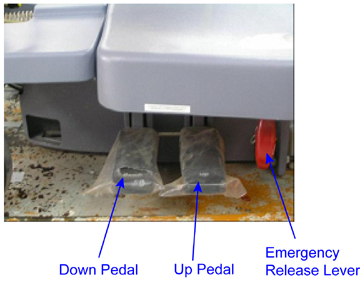
| ||||
| To avoid possible damage to equipment, do not use solutions containing amines, strong alkalies, esters, iodine, aromatic or chlorinated hydrocarbons, or ketones. Do not use autoclaves or the industrial washers and dryers found in most hospitals or professional laundry services. | ||||
| NOTE: | In case of any repairs or replacements, GE Healthcare will make available the relevant information or parts. Contact your nearest GE Healthcare representative. |
Perform the following checks once every week or sooner according to usage:
Pump up the table to full height, and then bring the table down using the down pedal. Listen for any abnormal noises. Visually check for any oil leakages below the patient transport. If any oil is present, immediately contact the Service personnel, and do not use the table for patient transport.
Use a mild soap solution for cleaning the patient transport of body fluids collected.
Visually check whether all the caster wheels are rotating freely, and the lock unlock function is working properly.
For the disposal of this patient transport at the end of its useful life, contact the Service personnel.